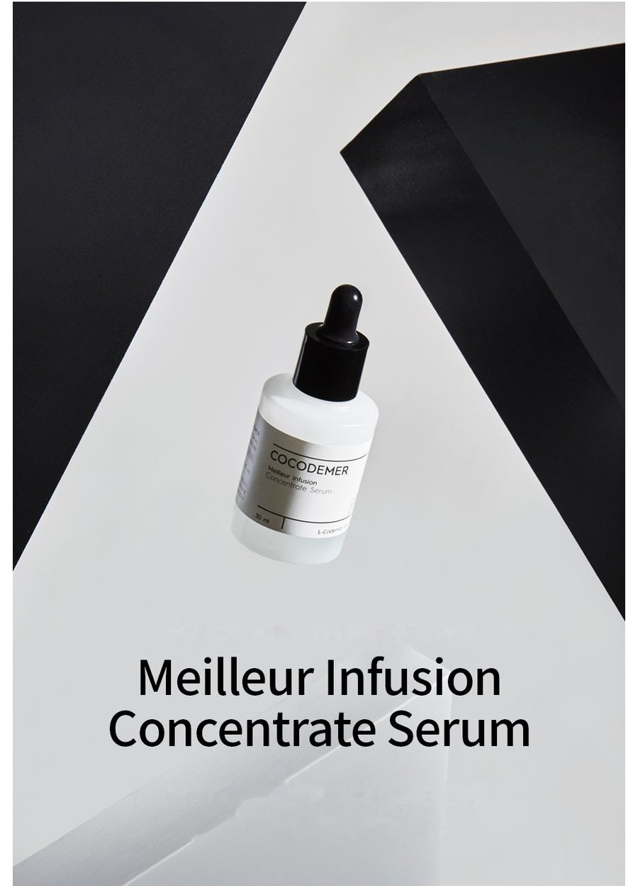
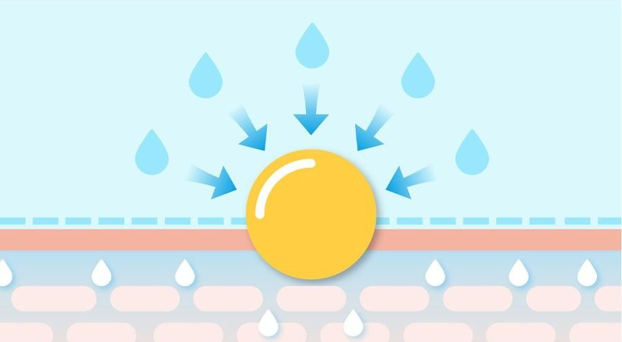
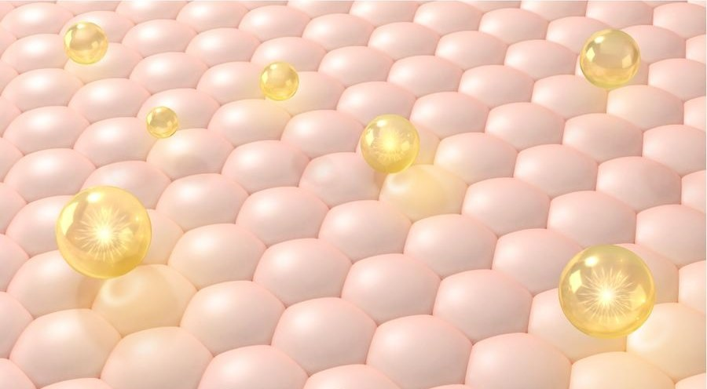

COCODEMER Meilleur Infusion Concentrate Serum
| Volume | 30ml |
|---|---|
| Suitable for | All skin types |
| Key technology | L-CODEMAR ELIXIR™ |
| Manufacturer · Responsible distributor | JUNGCOS CO., LTD. / COCODEMER CO., LTD. |
This product was developed as part of our custom cosmetics range. It is not currently available for sale. For inquiries about reproduction or renewal, please contact us through B2B Inquiry.

A high-performance velvet serum for skin-renewing anti-ageing care
An anti-ageing serum that fills skin with moisture and bounce
Functional brightening and anti-wrinkle ingredients fill the skin with elasticity from within and relieve pigmentation, leaving it clear and firm.
Moisture and nourishment in abundance bring the skin into balance, for a more natural, livelier and healthier complexion.
Velvet-soft on application, it absorbs without stickiness for a fresh finish.
Water-soluble moisturising emollients meet skin-friendly nourishing and softening oils for a smooth, cushioned glide. Together they balance the skin's oil and water, leaving it healthy and full of vitality.
A silky soft-focus barrier forms on the skin, filling it with moisture and nourishment from within. The result is a dual wrinkle-filling effect, inside and out, and a smooth, luminous complexion.
* The above applies to the specific ingredient only.
Key Active Code
- MoMoisturizingMoisturiser
- AwAnti WrinklesAnti-ageing
- WhWhiteningWhitening
- TbTrouble reliefTrouble relief
- BsBaseSkin softening

Oligosaccharides form a protective film that stops moisture evaporating and guards against water loss. An active B vitamin soothes the skin and strengthens its barrier, leaving it healthy and full of vitality.

Botox and collagen peptides, both highly compatible with skin, breathe elasticity back into skin left limp by outside stress and age.
Reduces the migration of melanin, easing pigmentation and brightening the skin tone for a clear, radiant complexion.
* The above describes the ingredients, not the finished product.
See the ingredient reference →
L-CODEMAR ELIXIR™
COCODEMER's proprietary technology.
Our unrivalled multi-layer nano-gel emulsion encapsulation technology holds the core actives — coconut water, phytosterols, 20 amino acids and honey extract — in a stable complex. That complex is then built into a skin-friendly liposomal form that mirrors the structure of skin itself, maximising the efficiency of delivery into the skin.
L-Codemar Elixir™ strengthens the bonds between skin cells. It restores a damaged barrier and forms a strong protective film, so hydration holds for longer.


How To Use
Pump the dropper, then smooth a small amount gently over the whole face.
An anti-ageing serum that fills skin with moisture and bounce
Functional brightening and anti-wrinkle ingredients fill the skin with elasticity from within and relieve pigmentation, leaving it clear and firm.
Moisture and nourishment in abundance bring the skin into balance, for a more natural, livelier and healthier complexion.
Velvet-soft on application, it absorbs without stickiness for a fresh finish.
Water-soluble moisturising emollients meet skin-friendly nourishing and softening oils for a smooth, cushioned glide. Together they balance the skin's oil and water, leaving it healthy and full of vitality.
A silky soft-focus barrier forms on the skin, filling it with moisture and nourishment from within. The result is a dual wrinkle-filling effect, inside and out, and a smooth, luminous complexion.
Oligosaccharides form a protective film that stops moisture evaporating and guards against water loss. An active B vitamin soothes the skin and strengthens its barrier, leaving it healthy and full of vitality.
Botox and collagen peptides, both highly compatible with skin, breathe elasticity back into skin left limp by outside stress and age.
Reduces the migration of melanin, easing pigmentation and brightening the skin tone for a clear, radiant complexion.
* The above describes the ingredients, not the finished product.
L-CODEMAR ELIXIR™
COCODEMER's proprietary technology. Our unrivalled multi-layer nano-gel emulsion encapsulation technology holds the core actives — coconut water, phytosterols, 20 amino acids and honey extract — in a stable complex. That complex is then built into a skin-friendly liposomal form that mirrors the structure of skin itself, maximising the efficiency of delivery into the skin. L-Codemar Elixir™ strengthens the bonds between skin cells. It restores a damaged barrier and forms a strong protective film, so hydration holds for longer.
Pump the dropper, then smooth a small amount gently over the whole face.
| Net volume or weight | 30ml |
|---|---|
| Suitable for | All skin types |
| Shelf life / period after opening | 30 months from date of manufacture; use within 12 months of opening |
| How to use | Pump the dropper, then smooth a small amount gently over the whole face. |
| Cosmetics manufacturer | JUNGCOS CO., LTD. |
| Responsible distributor | COCODEMER CO., LTD. |
| Country of origin | Republic of Korea |
| Full ingredients (INCI) | Cocos Nucifera (Coconut) Water, Water, Glycerin, Cyclopentasiloxane, Hydrogenated Polydecene, Butylene Glycol, Methylpropanediol, Betaine, Niacinamide, Polyglycerin-3, Raffinose, Centella Asiatica Extract, Ficus Carica (Fig) Fruit Extract, Dimethicone, 1,2-Hexanediol, Polysorbate 60, Panthenol, Honey Extract, Carthamus Tinctorius (Safflower) Seed Oil, Hydrogenated Lecithin, Oenothera Biennis (Evening Primrose) Oil, Sodium Hyaluronate, Acetyl Hexapeptide-8, Adenosine, Alanine, Arginine, Aspartic Acid, Bioflavonoids, Carbomer, Carnitine, Carnosine, Ceramide NP, Cetearyl Alcohol, Cetyl Ethylhexanoate, Citrulline, Creatine, Dimethicone/Vinyl Dimethicone Crosspolymer, Disodium EDTA, Ethylhexylglycerin, Glucosyl Hesperidin, Glutamic Acid, Glutamine, Glycine, Hydrogenated Phosphatidylcholine, Hydroxyacetophenone, Hydroxyethyl Acrylate/Sodium Acryloyldimethyl Taurate Copolymer, Inositol, Isoleucine, Leucine, Methionine, Myristic Acid, Neopentyl Glycol, Diheptanoate, Ornithine, Palmitic Acid, Palmitoyl Pentapeptide-4, Phenylalanine, Phytosterols, Polyglyceryl-10 Myristate, Polyglyceryl-2 Stearate, Polyquaternium-51, Polysorbate 20, Proline, Propanediol, Serine, Silica, Sorbitan Isostearate, Squalane, Stearic Acid, Threonine, Tranexamic Acid, Trehalose, Tryptophan, Tyrosine, Valine, Xanthan Gum, Fragrance (Parfum) |
| Functional cosmetic approval | Helps brighten the skin. Helps improve skin wrinkles. |
| Precautions | 1. If the treated area shows red spots, swelling, itching or other abnormal reactions during or after use, or following exposure to direct sunlight, consult a specialist. 2. Avoid use on broken or wounded skin. 3. Storage and handling a) Keep out of reach of children. b) Store away from direct sunlight. |
| Quality guarantee | In the event of a defect, compensation is provided in accordance with the Consumer Dispute Resolution Standards published by the Korea Fair Trade Commission. |
| Customer enquiries | 010-3307-9341 / cocodemer@cocodemer.co.kr |
* Required disclosure under Korean cosmetics labelling and advertising rules. This is a reference translation; for the certified ingredient declaration, CPSR or CoA, please contact us through the B2B enquiry.